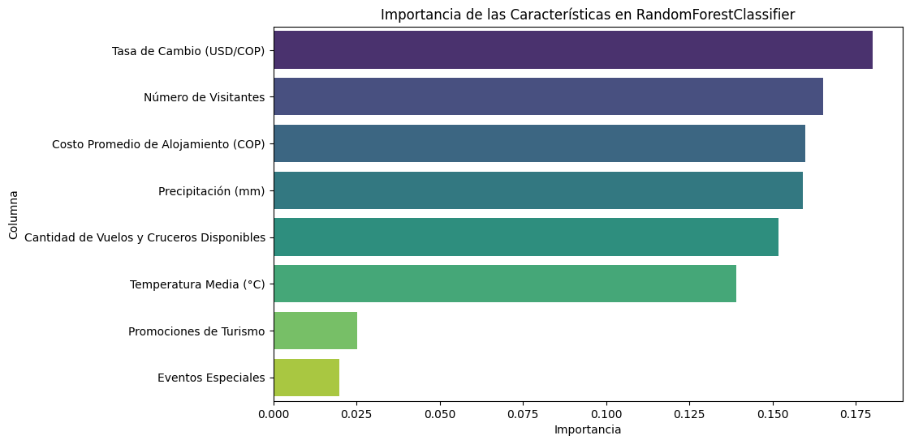

# Importar librerías
import pandas as pd
import numpy as np
import seaborn as sns
import matplotlib.pyplot as pltTaller Modelos de Predicción
Modelos sin Año y Mes
Exploramos el dataset
# Lecura
ruta = '../semana_5/turistas_cartagena_data.csv'
data = pd.read_csv(ruta)print(data.shape)
data.head()(500, 10)| Fecha | Número de Visitantes | Temperatura Media (°C) | Precipitación (mm) | Eventos Especiales | Costo Promedio de Alojamiento (COP) | Tasa de Cambio (USD/COP) | Promociones de Turismo | Cantidad de Vuelos y Cruceros Disponibles | Ocupación Hotelera (%) | |
|---|---|---|---|---|---|---|---|---|---|---|
| 0 | 1982-12 | 126958.0 | 27.6 | 195.4 | 0.0 | 252889.0 | 3076.77 | 0.0 | 74.0 | 88.0 |
| 1 | 1983-01 | 136932.0 | 27.6 | 248.9 | 0.0 | 268933.0 | 3231.50 | 1.0 | 103.0 | 98.4 |
| 2 | 1983-02 | 108694.0 | 30.7 | 61.9 | 1.0 | 113428.0 | 3478.34 | 0.0 | 205.0 | 72.0 |
| 3 | 1983-03 | 124879.0 | 31.6 | 3.3 | 0.0 | 275006.0 | 3925.80 | 0.0 | 122.0 | 63.9 |
| 4 | 1983-04 | 115268.0 | 31.9 | 41.1 | 0.0 | 346627.0 | 3400.98 | 0.0 | 169.0 | 89.9 |
data.info()<class 'pandas.core.frame.DataFrame'>
RangeIndex: 500 entries, 0 to 499
Data columns (total 10 columns):
# Column Non-Null Count Dtype
--- ------ -------------- -----
0 Fecha 495 non-null object
1 Número de Visitantes 485 non-null float64
2 Temperatura Media (°C) 495 non-null float64
3 Precipitación (mm) 495 non-null float64
4 Eventos Especiales 495 non-null float64
5 Costo Promedio de Alojamiento (COP) 495 non-null float64
6 Tasa de Cambio (USD/COP) 495 non-null float64
7 Promociones de Turismo 495 non-null float64
8 Cantidad de Vuelos y Cruceros Disponibles 495 non-null float64
9 Ocupación Hotelera (%) 495 non-null float64
dtypes: float64(9), object(1)
memory usage: 39.2+ KBLimpieza de datos
Datos Faltantes
# Imprimir registros con valores nulos a lo ancho
print(data[data.isnull().any(axis=1)]) Fecha Número de Visitantes Temperatura Media (°C) \
6 NaN NaN NaN
7 NaN NaN NaN
8 NaN NaN NaN
9 NaN NaN NaN
10 NaN NaN NaN
12 1983-12 NaN 25.8
52 1987-03 NaN 28.2
57 1987-08 NaN 31.9
71 1988-10 NaN 31.1
114 1992-04 NaN 25.9
125 1993-03 NaN 28.1
140 1994-06 NaN 28.4
327 2009-10 NaN 30.7
377 2013-11 NaN 27.3
379 2014-01 NaN 25.0
Precipitación (mm) Eventos Especiales \
6 NaN NaN
7 NaN NaN
8 NaN NaN
9 NaN NaN
10 NaN NaN
12 125.6 0.0
52 108.3 0.0
57 133.8 1.0
71 11.8 0.0
114 230.2 0.0
125 33.1 0.0
140 125.3 0.0
327 87.5 0.0
377 18.1 0.0
379 47.9 0.0
Costo Promedio de Alojamiento (COP) Tasa de Cambio (USD/COP) \
6 NaN NaN
7 NaN NaN
8 NaN NaN
9 NaN NaN
10 NaN NaN
12 355158.0 2568.47
52 432697.0 2964.06
57 384580.0 3454.60
71 364983.0 2620.27
114 166707.0 3373.30
125 390372.0 2731.69
140 260372.0 2710.83
327 457792.0 2926.41
377 150939.0 3149.09
379 287598.0 2813.32
Promociones de Turismo Cantidad de Vuelos y Cruceros Disponibles \
6 NaN NaN
7 NaN NaN
8 NaN NaN
9 NaN NaN
10 NaN NaN
12 1.0 292.0
52 0.0 222.0
57 0.0 295.0
71 1.0 89.0
114 1.0 278.0
125 0.0 183.0
140 0.0 263.0
327 0.0 188.0
377 1.0 192.0
379 0.0 253.0
Ocupación Hotelera (%)
6 NaN
7 NaN
8 NaN
9 NaN
10 NaN
12 53.1
52 74.6
57 70.3
71 68.6
114 95.4
125 91.4
140 58.0
327 83.1
377 92.2
379 75.7 # Ver valores nulos
print(data.isnull().sum())Fecha 5
Número de Visitantes 15
Temperatura Media (°C) 5
Precipitación (mm) 5
Eventos Especiales 5
Costo Promedio de Alojamiento (COP) 5
Tasa de Cambio (USD/COP) 5
Promociones de Turismo 5
Cantidad de Vuelos y Cruceros Disponibles 5
Ocupación Hotelera (%) 5
dtype: int64# Eliminar las filas completamente vacías
print(f'El tamaño del dataset antes de eliminar las filas vacías {data.shape}')
data.dropna(how='all', inplace=True)
print(f'El tamaño del dataset despues de eliminar las filas vacías {data.shape}')El tamaño del dataset antes de eliminar las filas vacías (500, 10)
El tamaño del dataset despues de eliminar las filas vacías (495, 10)# Rellenar 'Número de Visitantes' con la media
data['Número de Visitantes'] = data['Número de Visitantes'].fillna(data['Número de Visitantes'].mean())
data.info()<class 'pandas.core.frame.DataFrame'>
Index: 495 entries, 0 to 499
Data columns (total 10 columns):
# Column Non-Null Count Dtype
--- ------ -------------- -----
0 Fecha 495 non-null object
1 Número de Visitantes 495 non-null float64
2 Temperatura Media (°C) 495 non-null float64
3 Precipitación (mm) 495 non-null float64
4 Eventos Especiales 495 non-null float64
5 Costo Promedio de Alojamiento (COP) 495 non-null float64
6 Tasa de Cambio (USD/COP) 495 non-null float64
7 Promociones de Turismo 495 non-null float64
8 Cantidad de Vuelos y Cruceros Disponibles 495 non-null float64
9 Ocupación Hotelera (%) 495 non-null float64
dtypes: float64(9), object(1)
memory usage: 42.5+ KBEliminar duplicados
# Identificar filas duplicadas
data[data.duplicated()]| Fecha | Número de Visitantes | Temperatura Media (°C) | Precipitación (mm) | Eventos Especiales | Costo Promedio de Alojamiento (COP) | Tasa de Cambio (USD/COP) | Promociones de Turismo | Cantidad de Vuelos y Cruceros Disponibles | Ocupación Hotelera (%) |
|---|
# Eliminar duplicados
data.drop_duplicates(inplace=True)Verificar Columnas númericas
data.describe()| Número de Visitantes | Temperatura Media (°C) | Precipitación (mm) | Eventos Especiales | Costo Promedio de Alojamiento (COP) | Tasa de Cambio (USD/COP) | Promociones de Turismo | Cantidad de Vuelos y Cruceros Disponibles | Ocupación Hotelera (%) | |
|---|---|---|---|---|---|---|---|---|---|
| count | 495.000000 | 495.000000 | 495.000000 | 495.000000 | 495.000000 | 495.000000 | 495.000000 | 495.000000 | 495.000000 |
| mean | 79213.288660 | 28.427475 | 152.168485 | 0.187879 | 291329.464646 | 3228.464101 | 0.303030 | 177.006061 | 74.231717 |
| std | 42462.184309 | 2.038817 | 89.958267 | 0.391011 | 111495.245496 | 433.057422 | 0.460033 | 70.255966 | 14.271801 |
| min | 5769.000000 | 25.000000 | -50.000000 | 0.000000 | 100781.000000 | 2500.200000 | 0.000000 | 50.000000 | 50.000000 |
| 25% | 42284.500000 | 26.600000 | 70.000000 | 0.000000 | 196031.500000 | 2903.380000 | 0.000000 | 113.000000 | 61.850000 |
| 50% | 81213.000000 | 28.400000 | 154.700000 | 0.000000 | 286987.000000 | 3214.660000 | 0.000000 | 181.000000 | 73.000000 |
| 75% | 116688.000000 | 30.200000 | 230.800000 | 0.000000 | 383196.500000 | 3589.860000 | 1.000000 | 235.000000 | 87.050000 |
| max | 149572.000000 | 32.000000 | 299.400000 | 1.000000 | 499845.000000 | 3996.730000 | 1.000000 | 299.000000 | 100.000000 |
Outliers en variables numéricas
Usamos gráficos de boxplots para identificar datos atípicos:
# Seleccionamos solo las columnas numericas
cols_num = data.select_dtypes(exclude='object').columns
fig, ax = plt.subplots(nrows=3, ncols=3, figsize=(15,12))
fig.subplots_adjust(hspace=0.5, wspace=0.1)
# Aplanar la matriz de ejes para un acceso más fácil
ax = ax.flatten()
# Graficamos un boxplot por cada una de las columnas
for i, col in enumerate(cols_num):
sns.boxplot(x=col, data=data, ax=ax[i])
ax[i].set_title(col)
plt.show()Observaciones: - Precipitación mm tiene valores por debajo de 0 mm
Una precipitación negativa no tiene sentido, así que hay que corregir estos valores:
# Reemplzar los valores de precipitacion menores de 0 por la media
# Calcular el promedio solo con valores no negativos
mean_value = data.loc[data['Precipitación (mm)'] >= 0, 'Precipitación (mm)'].mean()
# Reemplazar los valores menores a 0 por el promedio corregido
data.loc[data['Precipitación (mm)'] < 0, 'Precipitación (mm)'] = mean_valueGuardamos el dataset limpio en un nuevo archivo .csv:
ruta = '../semana_5/turistas_cartagena_data_clean.csv'
data.to_csv(ruta)Modelo de regresión (predecir visitantes)
data.describe().loc[['max', 'min']]| Número de Visitantes | Temperatura Media (°C) | Precipitación (mm) | Eventos Especiales | Costo Promedio de Alojamiento (COP) | Tasa de Cambio (USD/COP) | Promociones de Turismo | Cantidad de Vuelos y Cruceros Disponibles | Ocupación Hotelera (%) | |
|---|---|---|---|---|---|---|---|---|---|
| max | 149572.0 | 32.0 | 299.4 | 1.0 | 499845.0 | 3996.73 | 1.0 | 299.0 | 100.0 |
| min | 5769.0 | 25.0 | 1.5 | 0.0 | 100781.0 | 2500.20 | 0.0 | 50.0 | 50.0 |
Dividir el conjunto de datos en entrenamiento y prueba
from sklearn.model_selection import train_test_split
# columnas_a_normalizar = [
# 'Temperatura Media (°C)', 'Precipitación (mm)',
# 'Costo Promedio de Alojamiento (COP)', 'Tasa de Cambio (USD/COP)',
# 'Cantidad de Vuelos y Cruceros Disponibles'
# ]
# Seleccionamos todos los atributos excepto la Fecha y la columna a predecir
X = data.drop(columns=['Fecha', 'Número de Visitantes'])
y = data['Número de Visitantes']
X_train, X_test, y_train, y_test = train_test_split(X, y,
test_size=0.2,
random_state=42)
print(X_train.shape, y_train.shape)
print(X_test.shape, y_test.shape)(396, 8) (396,)
(99, 8) (99,)Escalamiento de datos (MinMaxScaler)
Hagamos primero el escalamiento del set de entrenamiento y vemos algunas características de esta operación.
from sklearn.preprocessing import MinMaxScaler
x_scaler = MinMaxScaler()
# fit_transform: Calcular máximos/mínimos y escalar el set de entrenamiento
X_train_scaled = x_scaler.fit_transform(X_train)
# Algunas características del escalador
print('Características del escalador ajustado:')
print(x_scaler.data_min_)
print(x_scaler.data_max_)
# Resultado
print('\nResultado del escalamiento sobre "X_train":')
print(f'Mínimos: {X_train_scaled.min(axis=0)}')
print(f'Máximos: {X_train_scaled.max(axis=0)}')Características del escalador ajustado:
[2.50000e+01 1.50000e+00 0.00000e+00 1.00781e+05 2.50020e+03 0.00000e+00
5.00000e+01 5.00000e+01]
[3.20000e+01 2.99400e+02 1.00000e+00 4.95755e+05 3.99673e+03 1.00000e+00
2.99000e+02 9.95000e+01]
Resultado del escalamiento sobre "X_train":
Mínimos: [0. 0. 0. 0. 0. 0. 0. 0.]
Máximos: [1. 1. 1. 1. 1. 1. 1. 1.]Ahora escalemos el set X_test usando el método transform():
X_test_scaled = x_scaler.transform(X_test)
print('Set de prueba: ')
print(f'Máximos: {X_test_scaled.max(axis=0)}')
print(f'Mínimos: {X_test_scaled.min(axis=0)}')Set de prueba:
Máximos: [1. 0.97784491 1. 1.01035511 0.99019064 1.
1. 1.01010101]
Mínimos: [0.01428571 0.01309164 0. 0.01094756 0.00122283 0.
0.00401606 0.01010101]Entrenar el modelo
# Ahora si construir el modelo
from sklearn.linear_model import LinearRegression
# Crer el modelo de regresión lineal (instancia)
lr = LinearRegression()
# Entrenar el modelo
lr.fit(X_train_scaled, y_train) # No es necesario escalar y_trainLinearRegression()In a Jupyter environment, please rerun this cell to show the HTML representation or trust the notebook.
On GitHub, the HTML representation is unable to render, please try loading this page with nbviewer.org.
LinearRegression()
Generar predicciones
Hacemos predicciones con el set de pruebas escalado y exploramos las predicciones mirando el valor máximo y mínimo de los resultados
# Predicción con el set de prueba
y_test_pred = lr.predict(X_test_scaled) #
print(f'Máximo: {y_test_pred.max()}')
print(f'Mínimo: {y_test_pred.min()}')Máximo: 89159.83094408238
Mínimo: 72312.62546952753Errores
from sklearn.metrics import mean_absolute_error, mean_squared_error
mae = mean_absolute_error(y_test, y_test_pred)
mse = mean_squared_error(y_test, y_test_pred)
rmse = np.sqrt(mse)
print(f'Error Absoluto Medio (MAE): {mae:.2f}')
print(f'Error Cuadrático Medio (MSE): {mse:.2f}')
print(f'Raíz Cuadrada del Error Cuadrático Medio (RMSE): {rmse:.2f}')Error Absoluto Medio (MAE): 37270.58
Error Cuadrático Medio (MSE): 1770435124.06
Raíz Cuadrada del Error Cuadrático Medio (RMSE): 42076.54# Calcular el promedio de los valores reales
promedio_reales = y_test.mean()
# Comparar el MAE con ese promedio
porcentaje_error_mae = (mae / promedio_reales) * 100
print(f"MAE representa un error del {porcentaje_error_mae:.2f}% respecto al promedio real de turistas.")
# Comparar el RMSE con ese promedio
porcentaje_error_mae = (rmse / promedio_reales) * 100
print(f"RMSE representa un error del {porcentaje_error_mae:.2f}% respecto al promedio real de turistas.")MAE representa un error del 48.09% respecto al promedio real de turistas.
RMSE representa un error del 54.29% respecto al promedio real de turistas.Bloque para probar el modelo con nuevos datos ingresados por el usuario
X.columnsIndex(['Temperatura Media (°C)', 'Precipitación (mm)', 'Eventos Especiales',
'Costo Promedio de Alojamiento (COP)', 'Tasa de Cambio (USD/COP)',
'Promociones de Turismo', 'Cantidad de Vuelos y Cruceros Disponibles',
'Ocupación Hotelera (%)'],
dtype='object')# 1. Solicitar al usuario que ingrese valores de las características:
# Diccionario que va a almacenar los nuevos datos
nuevos_datos = {
'Temperatura Media (°C)': [30],
'Precipitación (mm)': [5],
'Eventos Especiales': [1],
'Costo Promedio de Alojamiento (COP)': [200000],
'Tasa de Cambio (USD/COP)': [4000],
'Promociones de Turismo': [1],
'Cantidad de Vuelos y Cruceros Disponibles': [50],
'Ocupación Hotelera (%)': [75]
}
# 2. Crear un DataFrame con los datos ingresados
nueva_data = pd.DataFrame(nuevos_datos)
# 3. Escalar los datos ingresados usando el mismo x_scaler de entrenamiento
nueva_data_escalada = x_scaler.transform(nueva_data)
# 4. Realizar la predicción con el modelo entrenado
nueva_prediccion = lr.predict(nueva_data_escalada)
# 5. Mostrar la predicción
print('\nPredicción del número de Visitantes:')
print(f'{nueva_prediccion[0]:.0f} turistas')
Predicción del número de Visitantes:
88946 turistasModelo de Clasificación (Alta/Baja Ocupación Hotelera)
Crear variable categórica
data['Temporada'] = data['Ocupación Hotelera (%)'].apply(lambda x: 'Alta' if x >= 70 else 'Baja')
data[['Ocupación Hotelera (%)', 'Temporada']].head()| Ocupación Hotelera (%) | Temporada | |
|---|---|---|
| 0 | 88.0 | Alta |
| 1 | 98.4 | Alta |
| 2 | 72.0 | Alta |
| 3 | 63.9 | Baja |
| 4 | 89.9 | Alta |
Exploramos la distribución de los datos:
sns.countplot(x='Temporada', data=data)
plt.ylabel('Conteo')
plt.title('Cantidad de datos en temporada Alta vs Baja')
plt.show()
data['Temporada'].value_counts()Temporada
Alta 284
Baja 211
Name: count, dtype: int64data['Temporada'] = data['Temporada'].map({'Alta': 1, 'Baja': 0})
data.head()| Fecha | Número de Visitantes | Temperatura Media (°C) | Precipitación (mm) | Eventos Especiales | Costo Promedio de Alojamiento (COP) | Tasa de Cambio (USD/COP) | Promociones de Turismo | Cantidad de Vuelos y Cruceros Disponibles | Ocupación Hotelera (%) | Temporada | |
|---|---|---|---|---|---|---|---|---|---|---|---|
| 0 | 1982-12 | 126958.0 | 27.6 | 195.4 | 0.0 | 252889.0 | 3076.77 | 0.0 | 74.0 | 88.0 | 1 |
| 1 | 1983-01 | 136932.0 | 27.6 | 248.9 | 0.0 | 268933.0 | 3231.50 | 1.0 | 103.0 | 98.4 | 1 |
| 2 | 1983-02 | 108694.0 | 30.7 | 61.9 | 1.0 | 113428.0 | 3478.34 | 0.0 | 205.0 | 72.0 | 1 |
| 3 | 1983-03 | 124879.0 | 31.6 | 3.3 | 0.0 | 275006.0 | 3925.80 | 0.0 | 122.0 | 63.9 | 0 |
| 4 | 1983-04 | 115268.0 | 31.9 | 41.1 | 0.0 | 346627.0 | 3400.98 | 0.0 | 169.0 | 89.9 | 1 |
Random Forest Classifier
Dividir el conjunto de datos en entrenamiento y prueba
# columnas_entrenamiento = [
# 'Temperatura Media (°C)', 'Precipitación (mm)',
# 'Costo Promedio de Alojamiento (COP)', 'Tasa de Cambio (USD/COP)',
# 'Cantidad de Vuelos y Cruceros Disponibles'
# ]
X_class = data.drop(columns=['Fecha',
'Temporada',
'Ocupación Hotelera (%)',
# 'Promociones de Turismo',
# 'Eventos Especiales',
# 'Número de Visitantes'
])
y_class = data['Temporada']
# Partición
Xc_train, Xc_test, yc_train, yc_test = train_test_split(X_class, y_class,
test_size=0.2,
random_state=42)
# Imprimir tamaños resultantes
print(f'Tamaño del set de entrenamiento: {Xc_train.shape} {yc_train.shape}')
print(f'Tamaño del set de prueba: {Xc_test.shape} {yc_test.shape}')Tamaño del set de entrenamiento: (396, 8) (396,)
Tamaño del set de prueba: (99, 8) (99,)Entrenar el modelo de Bosque Aleatorio
El entrenamiento sigue la misma lógica usada epara otros modelos de Scikit-Learn:
- Crear instancia del modelo
- Enrenar usando ‘fit()’ y el set de entrenamiento
Crearemos un modelo con los hiper-parámetros por defecto:
from sklearn.ensemble import RandomForestClassifier
# Crear el modelo de clasificación con RandomForest (instancia)
model_class = RandomForestClassifier(random_state=42,
oob_score=True)
# Entrenar el modelo, no es necesario escalar los valores
model_class.fit(Xc_train, yc_train)RandomForestClassifier(oob_score=True, random_state=42)In a Jupyter environment, please rerun this cell to show the HTML representation or trust the notebook.
On GitHub, the HTML representation is unable to render, please try loading this page with nbviewer.org.
RandomForestClassifier(oob_score=True, random_state=42)
Generar Predicciones
# Predicción con el set de prueba
yc_test_pred = model_class.predict(Xc_test) Métricas para clasificación
from sklearn.metrics import accuracy_score, classification_report
# Accuracy: porcentaje de predicciones correctas.
# Precision: cuántos positivos predichos realmente lo son.
# Recall: cuántos positivos reales se detectaron.
# F1-score: balance entre precision y recall.
print("Accuracy:", accuracy_score(yc_test, yc_test_pred))
print("\nReporte de Clasificación:")
print(classification_report(yc_test, yc_test_pred))Accuracy: 0.5050505050505051
Reporte de Clasificación:
precision recall f1-score support
0 0.41 0.25 0.31 44
1 0.54 0.71 0.61 55
accuracy 0.51 99
macro avg 0.47 0.48 0.46 99
weighted avg 0.48 0.51 0.48 99
Evaluación del nivel de importancia de las características
importancias = model_class.feature_importances_
nombres_columnas = Xc_train.columns
importancia_caracteristicas = pd.DataFrame({'Columna': nombres_columnas, 'Importancia': importancias})
importancia_caracteristicas = importancia_caracteristicas.sort_values('Importancia', ascending=False)
print("\nImportancia de las Características sin Año y Mes:\n", importancia_caracteristicas)
plt.figure(figsize=(10, 6))
sns.barplot(x='Importancia', y='Columna', data=importancia_caracteristicas,
hue='Columna', palette="viridis", legend=False)
plt.title('Importancia de las Características en RandomForestClassifier')
plt.xlabel('Importancia')
plt.ylabel('Columna')
plt.show()
Importancia de las Características sin Año y Mes:
Columna Importancia
5 Tasa de Cambio (USD/COP) 0.180003
0 Número de Visitantes 0.165236
4 Costo Promedio de Alojamiento (COP) 0.159825
2 Precipitación (mm) 0.159048
7 Cantidad de Vuelos y Cruceros Disponibles 0.151880
1 Temperatura Media (°C) 0.139073
6 Promociones de Turismo 0.025152
3 Eventos Especiales 0.019784
nuevos_datos_class = {
'Número de Visitantes': [130000],
'Temperatura Media (°C)': [30],
'Precipitación (mm)': [10],
'Eventos Especiales': [1],
'Costo Promedio de Alojamiento (COP)': [180000],
'Tasa de Cambio (USD/COP)': [4100],
'Promociones de Turismo': [1],
'Cantidad de Vuelos y Cruceros Disponibles': [60]
}
# 2. Crear un DataFrame con los datos ingresados
nueva_data_class = pd.DataFrame(nuevos_datos_class)
# # 3. Escalar los datos ingresados usando el mismo x_scaler de entrenamiento
# nueva_data_escalada = x_scaler.transform(nueva_data)
# 4. Realizar la predicción con el modelo entrenado
nueva_prediccion_class = model_class.predict(nueva_data_class)
# Cambiamos nuevamente el 1 por Alta y el 0 por Baja para mayor comprensión del resultado
nueva_prediccion_class_texto = pd.Series(nueva_prediccion_class).map({1: 'Alta', 0: 'Baja'})
# 5. Mostrar la predicción
print('\nPredicción de la Temporada:')
print(f'{nueva_prediccion_class_texto[0]}')
Predicción de la Temporada:
BajaModelos con Año y Mes
Incluir Año y Mes
Vamos a extraer el año y el mes de la columna Fecha para crear dos nuevas columnas:
Año: Para detectar si el turismo ha crecido o disminuido a lo largo del tiempo.Mes: Para identificar patrones repetitivos como temporadas altas o bajas.
# Convertir 'Fecha' a tipo datetime y crear nuevas columnas
data['Fecha'] = pd.to_datetime(data['Fecha'], format='%Y-%m')
data['Año'] = data['Fecha'].dt.year
data['Mes'] = data['Fecha'].dt.monthVerificamos si el tipo de dato ha cambiado e imprimimos las columnas Fecha, Año y Mes para observarlo:
print(data.dtypes)
data[['Fecha', 'Año', 'Mes']]Fecha datetime64[ns]
Número de Visitantes float64
Temperatura Media (°C) float64
Precipitación (mm) float64
Eventos Especiales float64
Costo Promedio de Alojamiento (COP) float64
Tasa de Cambio (USD/COP) float64
Promociones de Turismo float64
Cantidad de Vuelos y Cruceros Disponibles float64
Ocupación Hotelera (%) float64
Temporada int64
Año int32
Mes int32
dtype: object| Fecha | Año | Mes | |
|---|---|---|---|
| 0 | 1982-12-01 | 1982 | 12 |
| 1 | 1983-01-01 | 1983 | 1 |
| 2 | 1983-02-01 | 1983 | 2 |
| 3 | 1983-03-01 | 1983 | 3 |
| 4 | 1983-04-01 | 1983 | 4 |
| ... | ... | ... | ... |
| 495 | 2023-08-01 | 2023 | 8 |
| 496 | 2023-09-01 | 2023 | 9 |
| 497 | 2023-10-01 | 2023 | 10 |
| 498 | 2023-11-01 | 2023 | 11 |
| 499 | 2023-12-01 | 2023 | 12 |
495 rows × 3 columns
Modelo de regresión con Año y Mes
data.describe().loc[['max', 'min']]| Fecha | Número de Visitantes | Temperatura Media (°C) | Precipitación (mm) | Eventos Especiales | Costo Promedio de Alojamiento (COP) | Tasa de Cambio (USD/COP) | Promociones de Turismo | Cantidad de Vuelos y Cruceros Disponibles | Ocupación Hotelera (%) | Temporada | Año | Mes | |
|---|---|---|---|---|---|---|---|---|---|---|---|---|---|
| max | 2023-12-01 00:00:00 | 149572.0 | 32.0 | 299.4 | 1.0 | 499845.0 | 3996.73 | 1.0 | 299.0 | 100.0 | 1.0 | 2023.0 | 12.0 |
| min | 1982-12-01 00:00:00 | 5769.0 | 25.0 | 1.5 | 0.0 | 100781.0 | 2500.20 | 0.0 | 50.0 | 50.0 | 0.0 | 1982.0 | 1.0 |
Dividir el conjunto de datos en entrenamiento y prueba
from sklearn.model_selection import train_test_split
# columnas_a_normalizar = [
# 'Temperatura Media (°C)', 'Precipitación (mm)',
# 'Costo Promedio de Alojamiento (COP)', 'Tasa de Cambio (USD/COP)',
# 'Cantidad de Vuelos y Cruceros Disponibles', 'Año', 'Mes'
# ]
X = data.drop(columns=['Fecha', 'Número de Visitantes', 'Temporada'])
y = data['Número de Visitantes']
X_train1, X_test1, y_train1, y_test1 = train_test_split(X, y,
test_size=0.2,
random_state=42)
print(f'Tamaño del set de entrenamiento: {X_train1.shape} {y_train1.shape}')
print(f'Tamaño del set de prueba: {X_test1.shape} {y_test1.shape}')Tamaño del set de entrenamiento: (396, 10) (396,)
Tamaño del set de prueba: (99, 10) (99,)Escalamiento de datos (MinMaxScaler)
from sklearn.preprocessing import MinMaxScaler
x1_scaler = MinMaxScaler()
# fit_transform: Calcular máximos/mínimos y escalar el set de entrenamiento
X_train1_scaled = x1_scaler.fit_transform(X_train1)
# Algunas características del escalador
print('Características del escalador ajustado:')
print(x1_scaler.data_min_)
print(x1_scaler.data_max_)
# Resultado
print('\nResultado del escalamiento sobre "X_train":')
print(f'Mínimos: {X_train1_scaled.min(axis=0)}')
print(f'Máximos: {X_train1_scaled.max(axis=0)}')Características del escalador ajustado:
[2.50000e+01 1.50000e+00 0.00000e+00 1.00781e+05 2.50020e+03 0.00000e+00
5.00000e+01 5.00000e+01 1.98300e+03 1.00000e+00]
[3.20000e+01 2.99400e+02 1.00000e+00 4.95755e+05 3.99673e+03 1.00000e+00
2.99000e+02 9.95000e+01 2.02300e+03 1.20000e+01]
Resultado del escalamiento sobre "X_train":
Mínimos: [0. 0. 0. 0. 0. 0. 0. 0. 0. 0.]
Máximos: [1. 1. 1. 1. 1. 1. 1. 1. 1. 1.]Ahora escalemos el set X_test usando el método transform():
X_test1_scaled = x1_scaler.transform(X_test1)
print('Set de prueba: ')
print(f'Máximos: {X_test1_scaled.max(axis=0)}')
print(f'Mínimos: {X_test1_scaled.min(axis=0)}')Set de prueba:
Máximos: [1. 0.97784491 1. 1.01035511 0.99019064 1.
1. 1.01010101 1. 1. ]
Mínimos: [ 0.01428571 0.01309164 0. 0.01094756 0.00122283 0.
0.00401606 0.01010101 -0.025 0. ]Entrenar el modelo
# Ahora si construir el modelo
from sklearn.linear_model import LinearRegression
# Crer el modelo de regresión lineal (instancia)
lr1 = LinearRegression()
# Entrenar el modelo
lr1.fit(X_train1_scaled, y_train1) # No es necesario escalar y_trainLinearRegression()In a Jupyter environment, please rerun this cell to show the HTML representation or trust the notebook.
On GitHub, the HTML representation is unable to render, please try loading this page with nbviewer.org.
LinearRegression()
Generar predicciones
# Predicción con el set de prueba
y_test1_pred = lr1.predict(X_test1_scaled) #
print(f'Máximo: {y_test1_pred.max()}')
print(f'Mínimo: {y_test1_pred.min()}')Máximo: 89000.6362091118
Mínimo: 68113.18863561224Errores
from sklearn.metrics import mean_absolute_error, mean_squared_error
mae_con = mean_absolute_error(y_test1, y_test1_pred)
mse_con = mean_squared_error(y_test1, y_test1_pred)
rmse_con = np.sqrt(mse_con)
print(f'Error Absoluto Medio (MAE): {mae_con:.2f}')
print(f'Error Cuadrático Medio (MSE): {mse_con:.2f}')
print(f'Raíz Cuadrada del Error Cuadrático Medio (RMSE): {rmse_con:.2f}')Error Absoluto Medio (MAE): 37286.34
Error Cuadrático Medio (MSE): 1772616484.48
Raíz Cuadrada del Error Cuadrático Medio (RMSE): 42102.45# Calcular el promedio de los valores reales
promedio_reales1 = y_test1.mean()
# Comparar el MAE con ese promedio
porcentaje_error_mae_con = (mae_con / promedio_reales1) * 100
print(f"MAE representa un error del {porcentaje_error_mae_con:.2f}% respecto al promedio real de turistas.")
# Comparar el RMSE con ese promedio
porcentaje_error_mae_con = (rmse_con / promedio_reales1) * 100
print(f"RMSE representa un error del {porcentaje_error_mae_con:.2f}% respecto al promedio real de turistas.")MAE representa un error del 48.11% respecto al promedio real de turistas.
RMSE representa un error del 54.33% respecto al promedio real de turistas.Modelo de Clasificación con Año y Mes
Random Forest Classifier
Dividir el conjunto de datos en entrenamiento y prueba
data.columnsIndex(['Fecha', 'Número de Visitantes', 'Temperatura Media (°C)',
'Precipitación (mm)', 'Eventos Especiales',
'Costo Promedio de Alojamiento (COP)', 'Tasa de Cambio (USD/COP)',
'Promociones de Turismo', 'Cantidad de Vuelos y Cruceros Disponibles',
'Ocupación Hotelera (%)', 'Temporada', 'Año', 'Mes'],
dtype='object')# columnas_entrenamiento = [
# 'Temperatura Media (°C)', 'Precipitación (mm)',
# 'Costo Promedio de Alojamiento (COP)', 'Tasa de Cambio (USD/COP)',
# 'Cantidad de Vuelos y Cruceros Disponibles', 'Año', 'Mes'
# ]
X_class = data.drop(columns=['Fecha',
'Temporada',
'Ocupación Hotelera (%)',
# 'Eventos Especiales',
# 'Promociones de Turismo',
# 'Número de Visitantes'
])
y_class = data['Temporada']
# Partición
Xc_train1, Xc_test1, yc_train1, yc_test1 = train_test_split(X_class, y_class,
test_size=0.2,
random_state=42)
# Imprimir tamaños resultantes
print(f'Tamaño del set de entrenamiento: {Xc_train1.shape} {yc_train1.shape}')
print(f'Tamaño del set de prueba: {Xc_test1.shape} {yc_test1.shape}')Tamaño del set de entrenamiento: (396, 10) (396,)
Tamaño del set de prueba: (99, 10) (99,)Entrenar el modelo de Bosque Aleatorio
from sklearn.ensemble import RandomForestClassifier
# Crear el modelo de clasificación con RandomForest (instancia)
model_class1 = RandomForestClassifier(random_state=42,
oob_score=True)
# Entrenar el modelo, no es necesario escalar los valores
model_class1.fit(Xc_train1, yc_train1)RandomForestClassifier(oob_score=True, random_state=42)In a Jupyter environment, please rerun this cell to show the HTML representation or trust the notebook.
On GitHub, the HTML representation is unable to render, please try loading this page with nbviewer.org.
RandomForestClassifier(oob_score=True, random_state=42)
Generar Predicciones
# Predicción con el set de prueba
yc_test1_pred = model_class1.predict(Xc_test1) Métricas para clasificación
from sklearn.metrics import accuracy_score, classification_report
# Accuracy: porcentaje de predicciones correctas.
# Precision: cuántos positivos predichos realmente lo son.
# Recall: cuántos positivos reales se detectaron.
# F1-score: balance entre precision y recall.
print("Accuracy:", accuracy_score(yc_test1, yc_test1_pred))
print("\nReporte de Clasificación:")
print(classification_report(yc_test1, yc_test1_pred))Accuracy: 0.5454545454545454
Reporte de Clasificación:
precision recall f1-score support
0 0.48 0.36 0.42 44
1 0.58 0.69 0.63 55
accuracy 0.55 99
macro avg 0.53 0.53 0.52 99
weighted avg 0.54 0.55 0.53 99
Evaluación del nivel de importancia de las características
importancias = model_class1.feature_importances_
nombres_columnas = Xc_train1.columns
importancia_caracteristicas = pd.DataFrame({'Columna': nombres_columnas, 'Importancia': importancias})
importancia_caracteristicas = importancia_caracteristicas.sort_values('Importancia', ascending=False)
print("\nImportancia de las Características con Año y Mes:\n", importancia_caracteristicas)
plt.figure(figsize=(10, 6))
sns.barplot(x='Importancia', y='Columna', data=importancia_caracteristicas,
hue='Columna', palette="viridis", legend=False)
plt.title('Importancia de las Características en RandomForestClassifier')
plt.xlabel('Importancia')
plt.ylabel('Columna')
plt.show()
Importancia de las Características con Año y Mes:
Columna Importancia
5 Tasa de Cambio (USD/COP) 0.141277
2 Precipitación (mm) 0.139966
4 Costo Promedio de Alojamiento (COP) 0.137489
0 Número de Visitantes 0.128695
7 Cantidad de Vuelos y Cruceros Disponibles 0.120382
1 Temperatura Media (°C) 0.110944
8 Año 0.109065
9 Mes 0.079142
6 Promociones de Turismo 0.017839
3 Eventos Especiales 0.015201Celdas de Resultados
Tablas comparativas
Tabla comparación - Regresión
print(f'Error sin Año y Mes MAE: {mae:.2f}')
print(f'Error con Año y Mes MAE: {mae_con:.2f}')
print(f'\nError sin Año y Mes RMSE: {rmse:.2f}')
print(f'Error con Año y Mes RMSE: {rmse_con:.2f}')Error sin Año y Mes MAE: 37270.58
Error con Año y Mes MAE: 37286.34
Error sin Año y Mes RMSE: 42076.54
Error con Año y Mes RMSE: 42102.45| Métrica | Sin Año/Mes | Con Año/Mes | Mejoró? |
|---|---|---|---|
| MAE | 37270.58 | 37286.34 | No |
| RMSE | 42076.54 | 42102.45 | No |
| % Error MAE | 48.09% | 48.11% | No |
| % Error RMSE | 54.29% | 54.33% | No |
Tabla de comparación - Clasificación
print(f'Accuracy sin Año y Mes: {accuracy_score(yc_test, yc_test_pred):.2f}')
print(f'Accuracy con Año y Mes: {accuracy_score(yc_test1, yc_test1_pred):.2f}')
print("\nReporte de Clasificación sin Año y Mes:")
print(classification_report(yc_test, yc_test_pred))
print("Reporte de Clasificación con Año y Mes:")
print(classification_report(yc_test1, yc_test1_pred))Accuracy sin Año y Mes: 0.51
Accuracy con Año y Mes: 0.55
Reporte de Clasificación sin Año y Mes:
precision recall f1-score support
0 0.41 0.25 0.31 44
1 0.54 0.71 0.61 55
accuracy 0.51 99
macro avg 0.47 0.48 0.46 99
weighted avg 0.48 0.51 0.48 99
Reporte de Clasificación con Año y Mes:
precision recall f1-score support
0 0.48 0.36 0.42 44
1 0.58 0.69 0.63 55
accuracy 0.55 99
macro avg 0.53 0.53 0.52 99
weighted avg 0.54 0.55 0.53 99
| Métrica | Sin Año/Mes | Con Año/Mes | Mejoró? |
|---|---|---|---|
| Accuracy | 0.51 | 0.55 | Si |
| F1-score(Alta) | 0.61 | 0.63 | Si |
| F1-score(Baja) | 0.31 | 0.42 | Si |
| Precision promedio | 0.47 | 0.53 | Si |
| Recall promedio | 0.48 | 0.53 | Si |
Refexión final
- Qué efecto tuvo la inclusión de Año y Mes en el modelo de regresión?
- En el modelo de Regresión Lineal, incluir el Año y el Mes, no representó una mejora significativa en el rendimiento.
- Qué efecto tuvo en el modelo de clasificación?
- En el modelo de clasificación con RandomForestClassifier, incluir el Año y el Mes tuvo una ligera mejora en el accuracy de 0.51 a 0.55 y también en el F1-score en las predicciones de temporada ‘Alta’ y ‘Baja’.
- Por qué crees que ocurrió esa diferencia?
- En el modelo de regresión lineal no hubo diferencia debido a su limitación para encontrar algunos patrones en el Año y el Mes. Es probable también que con las otras características ya se tuviera una buena predicciåón del número de visitantes. El modelo de clasificación RandomForesClassifier, al ser más robusto y no lineal pudo aprovechar un poco mejor los datos de Año y Mes. Adicionalmente la clasificación puede ser más sensible a valores de tiempo que la predicción nuérica en la regresión.
- En qué tipo de problemas reales crees que Año y Mes serían especialmente útiles?
- Pueden ser útiles en problemas donde el objetivo se relaciona con la época o temporada. Algunos ejemplos podrían ser:
- Predicción de ventas: Ver que productos se venden más en época de vacaciones.
- Predicción de generación de energía solar: Ver en que meses del año se genera mayor cantidad de energía.
- Predicción del clima: Predecir temporada de vientos, lluvias o sequías.
- Qué aprendizaje te deja este ejercicio sobre el uso de variables temporales en Machine Learning?
- Las variables temporales pueden ser útiles pero su utilidad depende del contexto de uso y el modelo utilizado.
- Añadir información del tiempo, no siempre mejora el rendimiento del modelo.
- El modelo Random Forest al ser mas robusto aprovecha de mejor manera los datos temporales.